WSN技术体系与物理层
“体系框架→物理层核心→实践应用”
传感器网络节点协议栈
传感器网络节点协议栈是无线传感器网络（WSN）的 “核心骨架”
本质是一套分层协作 + 跨层管理的技术体系
既通过五层协议栈实现 “数据传输从底层到上层的标准化流转”
物理层：协议栈的 “基础设施层”，直接对接无线信道（如射频、光、超声波）；
- 实现 “数字比特流” 与 “无线信号” 的相互转换，实现简单､强壮的信号调制和数据收发
- 选择传输媒体（射频 / 光 / 超声波）、确定工作频率、信号调制解调（ASK、FSK、PSK)、能量感知（检测信号强度）；
数据链路层：负责 “相邻节点之间的直接通信管理”（只处理近距离、直接可达的节点交互）；
- 负责 “相邻节点之间的直接通信管理”
- 把物理层传来的 “零散比特流” 包装成 “数据帧”，确保相邻节点间传输 “无错、有序、高效”；
- 数据组帧，媒体访问控制（MAC)，差错控制，链路管理
网络层：负责 “跨节点、多跳的数据路径规划”
- 路由发现（找到从数据源到 Sink 节点的可用路径）、路由选择（选最优路径，如能量消耗最少、延迟最小）、路由维护（路径失效时重新找路，如节点移动 / 故障）；
- 基于局部拓扑信息；数据为中心
传输层：负责 “Sink 节点与传感器节点之间的端到端数据流控制”（确保数据从源头到终点的整体可靠）；
- 拥塞控制，流量控制，可靠传输
应用层：直接对接用户需求（把传输来的数据转化为实际应用价值）；
- 通过标准化协议和接口，让上层应用程序无需关注底层技术细节，直接调用网络资源实现数据交互；
管理平台是 “横向支撑体系”
- 能源管理：管理节点的能量使用
- 移动管理：跟踪节点移动状态，维护网络拓扑稳定性；
- 任务管理：平衡全网任务负载，确保所有任务高效执行；
无线传感器网络——物理层
无线通信技术概述
物理层最基础的核心 ——无线通信技术
WSN 物理层的无线通信，本质是 “靠电磁波当‘载体’，通过发射机和接收机的‘信号转换’，实现无实体线路的信息交换”。
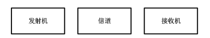
- 发射机：将原始信号转换成更适合在给定传输介质上传输信号的设备电路｡
- 信道：信号传输的载体
- 接收机：从传输介质接受发射的信号并将其转换回原始形式的设备电路
无线通信频段
无线通信频段就像无线传感器网络（WSN）的 “专属通信频道”—— 不同频段的 “传播能力”“使用规则” 完全不同
频率越高，波长越短；传播能力越弱，但数据传输速率越高。
- 长波（如 LF 频段，30-300kHz）：波长 1-10km，能绕地球曲面传播，传输距离远，但数据率低（只能传低速信号）；
微波（如 2.4GHz，属于 SHF 频段）：波长 10cm 左右，绕射能力弱（容易被墙壁、障碍物遮挡），但数据率高（能传高速数据），是 WSN 的主流选择。
ISM 波段，是 WSN 的 “首选频道”，核心原因就一个：无需申请频率许可，直接使用，大幅降低成本。
WSN 节点基本都属于 “微功率短距离设备”，所以：
- 只要选用 ISM 波段，且满足发射功率、覆盖半径要求（几百米之内），就不用申请许可，直接部署；
无线电波传播特性
多径传输
同一发射信号通过直射、反射、衍射、散射等多种不同路径，先后到达接收端，形成多个 “时延不同、幅度不同、相位不同” 的信号，这种现象叫多径传输，对应的信号叠加效应叫多径效应。
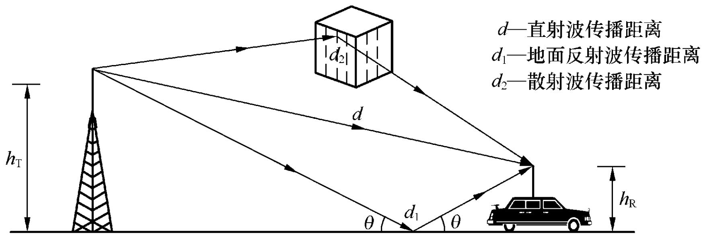
直射：无线通信的 “理想路径”
- 无线电波从发射天线出发，沿着直线无遮挡的路径直接到达接收点
- 真空，无障碍
- 对应模型：自由空间模型
反射：信号的 “反弹传播”
- 无线电波遇到两种密度不同的平滑介质边界，改变传播方向后到达接收点
- 核心影响：反射后的信号会与直射信号产生相位差
衍射（绕射）：信号的 “绕障能力”
- 无线电波遇到障碍物时，不会被完全阻挡，，沿着障碍物边缘弯曲传播，到达障碍物后方的接收点，这个过程叫衍射（也叫绕射）。
- 绕障能力与波长正相关—— 波长越长（频率越低），绕障能力越强
- 衍射后的信号会发生偏转
散射：信号的 “扩散传播”
- 无线电波遇到粗糙表面或 “体积远小于波长的微小障碍物”时，发生多次反射并向多个方向弥散传播，这个过程叫散射。
- 散射后的信号方向杂乱、能量分散
衰减与信道损失
无线电波传播的本质是能量的扩散传播
无线电波的能量会随传播距离增加而逐渐分散，导致接收端信号功率下降，这个过程叫衰减，其中 “自由空间中因距离导致的能量扩散损耗” 叫信道损失（Path Loss）。
Friis 自由空间方程：
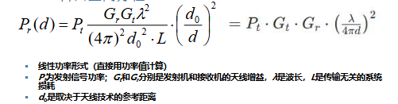
接收功率 Pr 与实际距离 d 的平方成反比 —— 距离翻倍，接收功率变为原来的 1/4（对应衰减 6dB）。
功率相关概念
毫瓦分贝（dBm: milliwatt decibel）
- 用于表示功率大小的绝对值
- 计算公式为：
10 × lg(P / 1mW) - 1W = 1000mW = 30dBm
分贝（dB: decibel）
- 用于表征功率的相对比值，是倍数的对数表达式，即表示两个功率的相对比值
- 计算公式为：
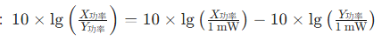
- 直接用两个功率的 dBm 值相减，就是它们的相对比值 dB：dB=XdBm−YdBm
- 同时：功率损失（dB）= 发射功率（dBm）−接收功率（dBm）
3dB 法则：小功率系统的 “功率翻倍 / 减半” 捷径
在 WSN 这类 “小功率系统” 中，3dB 是个关键阈值
- +3dB = 功率 ×2（功率增加一倍）；
- -3dB = 功率 ÷2（功率降低一半）；
- +6dB = 功率 ×4（3dB×2，翻倍两次）；
- -6dB = 功率 ÷4（3dB×2，减半两次）。
弗里伊斯自由空间方程（对数功率形式）
- 理想无遮挡环境中，接收功率 = 发射功率 + 天线增益 - 空间损耗（公式最后一项是空间损耗 dB 值）。
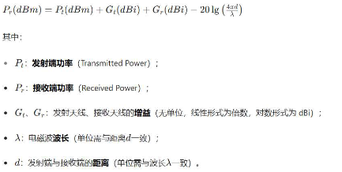
除了自由空间损耗，还有多径、遮挡（阴影）、多普勒频移等衰落，所以需要引入 “信道损失指数γ”（2~6）
所以改进的的 Friis 方程：
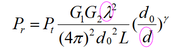
- 接收功率与波长（频率）有关：频率越高（波长越短），损耗越大
- 接收功率与传播距离有关：距离越远、γ越大（遮挡越严重），接收功率越小。
接收灵敏度
- 接收灵敏度是接收端能够正确解码信号的最小功率门限（用 dBm 表示），信号低于这个值，就无法正常解码数据。
调制与解调
调制与解调是 WSN 物理层 “信号适配无线传输” 的核心技术，本质是 “给数字信号装载体、传出去、再还原” 的完整流程
调制（Modulation）：把信号转换成适合在信道中传输的形式的一种过程；具体来说就是来自信道字符集的每一个符号被映射为一个或者有限多个波形（Waveforms），也称码元(码片)，且波形长度相同。承载信息量的基本信号单位
其中，波形的长度为符号持续期，也称符号周期
解调（Demodulation）：调制的逆过程，其作用是将已调信号中的调制信号恢复出来
- 基带信号：传感器采集的 “原始数据”，是符号的序列（不一定是0/1），其中符号来自信道字符集。并且根据字符集的数量分为二进制调制（两个符号），多进制调制。
- 载波信号：高频周期性振荡信号（如 2.4GHz 正弦波）
- 载波调制：用基带信号控制载波的参数（幅度、频率、相位），让原始数据具备无线传输能力；
- 已调信号：载波被基带信号 “改造” 后形成的信号，兼具传输能力和数据承载能力；
二进制调制
每个符号对应 1 个比特（0 或 1），技术简单、成本低，适合低速率场景：
| 调制方式 | 核心原理 | 优缺点 |
|---|---|---|
| ASK（幅移键控） | 用载波幅度变化表示 0/1（如有载波 = 1，无载波 = 0） | 优点：结构简单、带宽需求小；缺点：抗干扰能力差 |
| FSK（频移键控） | 用载波频率变化表示 0/1（如 f1=1，f2=0） | 优点：抗干扰比 ASK 强；缺点：需要更大带宽 |
| PSK（相移键控） | 用载波相位变化表示 0/1（如 0°=1，180°=0） | 优点：抗干扰最强；缺点：结构复杂、实现成本稍高 |
相同 SNR 下，PSK 的误码率最低（最可靠），ASK 最高（最易出错）；
多进制调制
1 个符号对应 n 个比特（如 4 进制→2 个比特，8 进制→3 个比特）；
- 4-ASK：用 4 种载波幅度（0、A、2A、3A），分别对应 00、01、10、11；
- 4-PSK：用 4 种载波相位（0°、π/2、π、3π/2），分别对应 00、01、10、11；
关键公式：数据率（bps）= 符号速率（波特）× 单个波形编码比特数
（例：4 进制调制，符号速率 1000 波特，单个符号编 2 比特→数据率 = 2000bps）。
- 符号速率（Symbol rate），也称码元传输速率、传码率，是单位时间内传输的符号个数。是符号周期的倒数。单位为“波特”,又称波特率，常用符号"Baud"表示，简写为"B"
- 对于二进制调制而言，符号速率=“比特率”
噪声和干扰
对于发送端来说，多径传播会导致信号失真，传播过程中则噪声和干扰会导致信号失真
- 噪声：导体电子热运动产生的 “固有杂音”（加性高斯白噪声 AWGN），无法避免，会让信号失真；
- 干扰：外部无用信号，主要分 3 类：
- 多用户干扰：其他节点同时发射同频段信号；
- 同信道干扰：相同频率的干扰源（如附近 WiFi）；
- 临信道干扰：邻近频率的干扰源（如相邻信道设备）
衡量信号质量的 3 个核心指标
SNR（信噪比）：信号功率 ÷ 噪声功率，只考虑固有噪声，数值越高信号越 “纯净”；
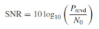
SINR（信号干扰噪声比）：信号功率 ÷（噪声功率 + 所有干扰功率），实际环境中更实用；
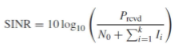
BER（误码率）：错误比特数 ÷ 总比特数（如 BER=10⁻⁵表示每传 10 万个比特最多错 1 个），是可靠性的直接体现。
无线信号的 3 大覆盖区域
以发射节点为中心，按信号强度和通信能力分为 3 个同心圆：
- 通信区域：信号满足接收灵敏度和 SINR 要求，能可靠解码数据（WSN 部署核心区域，需保证相邻节点覆盖重叠）；
- 侦测区域：能检测到信号，但误码率极高，无法建立有效通信（仅用于节点发现）；
- 干扰区域：无法解码信号，还会干扰其他节点（部署时需避开关键节点）；
捕获效应：多信号同时到达时，接收机优先处理功率更强的信号（通常强 3~6dB 以上），可缓解干扰。
信号传输方式
（一）按通信对象数量划分
- 点到点通信：两个节点直接交互（如传感器→中继节点）；
- 点到多点通信：一个节点向多个节点发送（如 Sink 节点→所有传感器）；
- 多点间通信：多个节点互传（如传感器间协同感知）。
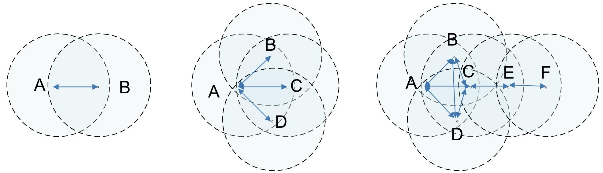
（二）按传输方向与时间划分
- 单工通信：单向传输（如广播，传感器只发不收）；
- 半双工通信：双向传输但不同时（如对讲机，WSN 主流方式）；
- 全双工通信：双向同时传输（如电话，功耗高，少用）。
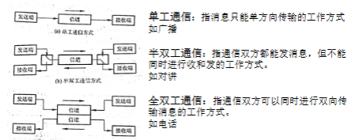
对于WSN 节点 “低功耗、廉价” 的特性，物理层使用分组传输与同步：确保信号 “被正确识别”
- 用串行传输（比特一位一位传），需保证 “码元同步”（识别每个比特起止）和 “字符同步”（识别数据边界）；
- 同步实现：发射端先发送 “Training（训练序列）”，接收端校准频率、相位后，再检测帧边界、接收数据；
- 帧结构（IEEE 802.15.4 标准）：前导码（4 字节，同步）→SFD（1 字节，帧起始）→帧长度（1 字节）→保留位→PSDU（可变长度，核心数据）。
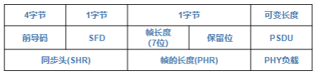
同时需要考虑能量优化
- 接收能耗不可忽视：接收模式能耗与发射模式相当甚至更高；
- 启动能耗高
- 通信成本远高于计算成本
还需要考虑非理想特性
- 链路状况随空间变化：MICA2 节点的信号强度因传输方向不同而变化（部分方向信号弱）；
- 电池电压影响发射功率：电池电压下降（如 1.4V→1.18V）会导致发射功率降低，通信距离缩短。